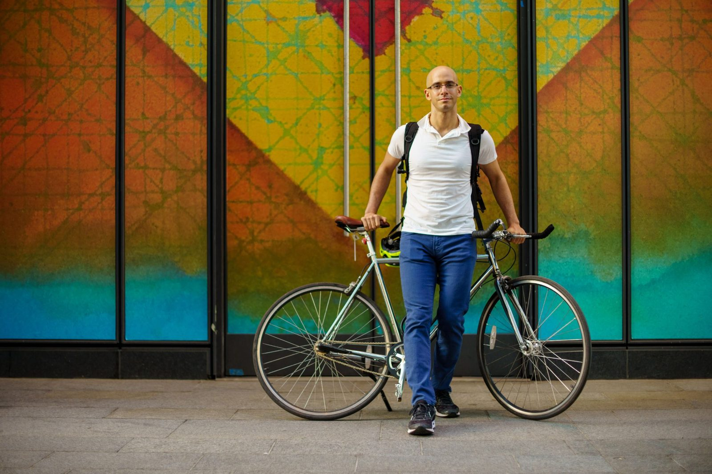
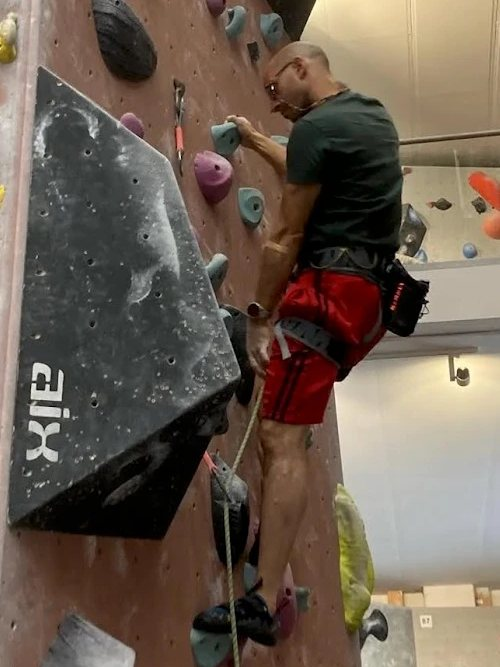
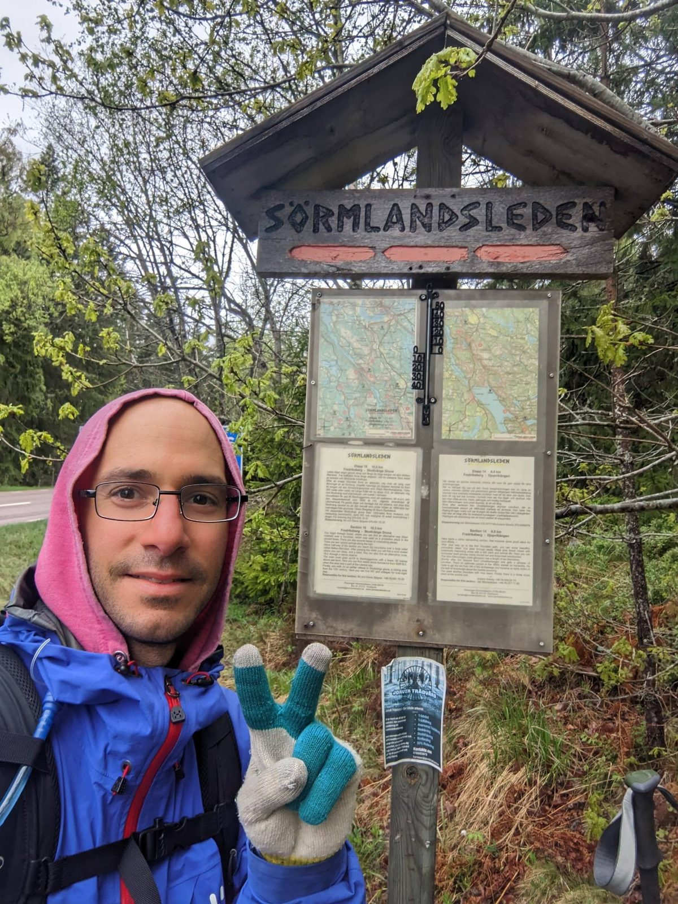
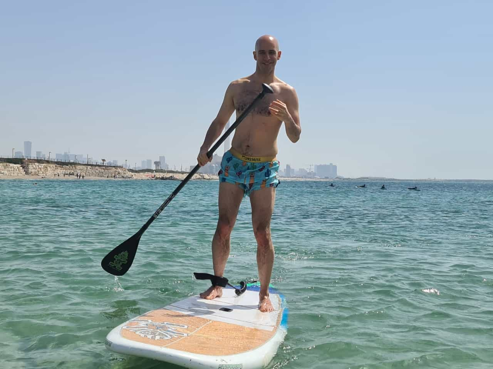
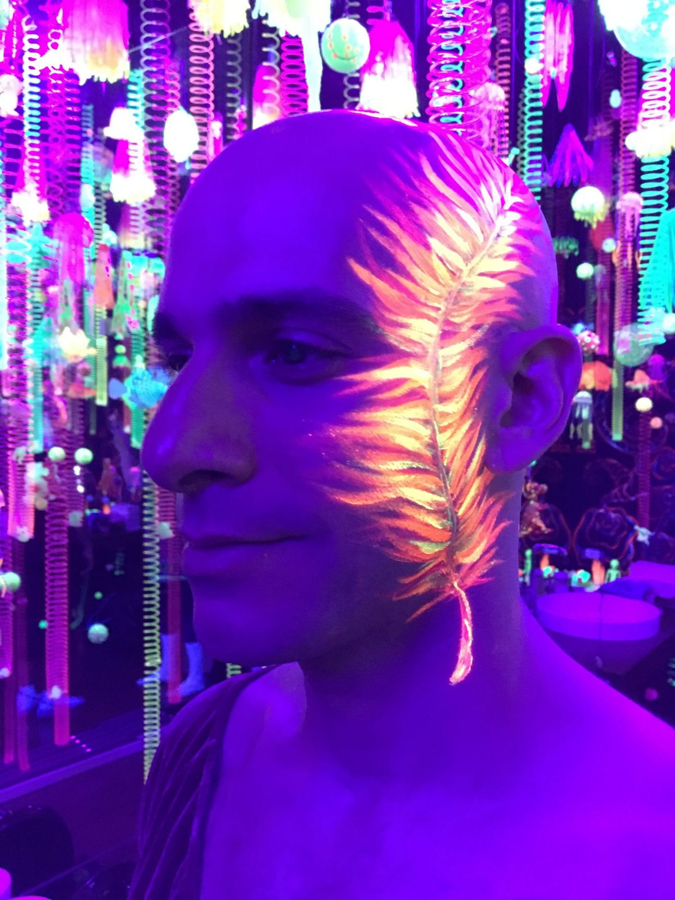
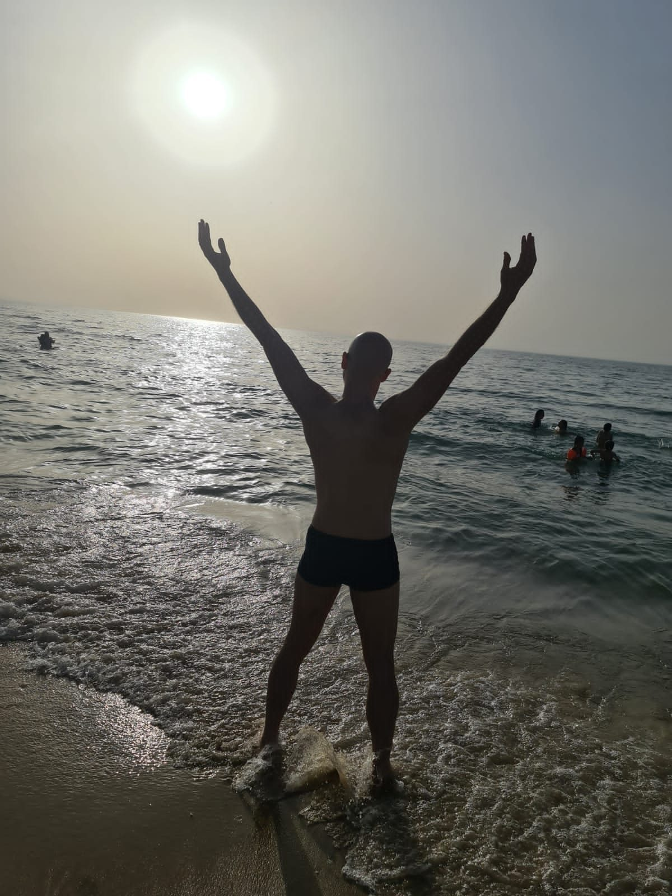

Active & healthy
I run, go to the gym, play squash, hike, climb, and take joy in moving and using my meat-cage in a plethora of ways.
Part Fighter, mostly Lover.
Flerpsy's human.
Looking for my life partner.
a forever-person to have exciting adventures and boring routine with. Spend time in nature and cozy evenings indoors. Share sweat, tears, and a lifetime of bad puns. Sounds interesting? Let's go!
I run, go to the gym, play squash, hike, climb, and take joy in moving and using my meat-cage in a plethora of ways.
I love being silly, bantering and joking around (eccentric, cynical, and punny humour), actual games (board games, video games), trying new things, and striving for a “Yes, and…” mindset.
My puppy is very important to me. After all, I gave birth to her via parthenogenesis after carrying her in my womb for 18 months.
I'll show up, listen deeply, and put in the work. I believe loving someone means letting them change you, and I'm up for that. We're on this journey together.
I wasn't dealt the easiest hand, and I'm working on it: years of therapy, many books, mindfulness practice, and the crucible of intimate relationships and friendships. I've come a long way and I can proudly say that there's only a lifetime of work left to do ^_^
Cuddles, hand-holding, physical touch, and intimacy are very important to me.






Taking it one day at a time, breathing, practicing joy-love-gratitude, flailing my body around, leaning into relationships with loved ones, making trouble, exploring, exploiting, exploding.
I skew towards life in work-life-balance, and I'm lucky to have the freedom of self-employment (IT) to dedicate more time to flailing and friends \o/
How the world works, markets, geopolitics, immigration, tolerance, the nature of man and woman, my own behavior and decisions, how to make my loved ones happy, how to be a better monkey.
We start with morning cuddles & breakfast. Get sweaty: a run, climbing session, racket sport? Hang out with friends and share nutritious, delicious food. Time outside in nature (more snacking opportunities) – it's sunny and warm, of course. Stretching, yoga or mobility routine. Something intellectually stimulating: reading, or a game. A hot bath together. We end it passed out tangled up in each other, full of endolphins swimming in our torsos.
We check in about our day, we share dinner, we tackle chores together, we look for and turn towards each other's bids for connection, we cuddle while scrolling separately on our phones, we read, together or separately, we go to sleep at the same time, we spoon, we say “I love you”.
Pride & Prejudice, The Discworld, Dungeon Crawler Carl, Man's Search for Meaning, The Sandman, All About Love, Jane Eyre, Practical Guide to Evil, Already Free, The Road Less Traveled, On Death and Dying are just some that come to mind.
I can get narrow-sighted and self-centered. I can be harsher than I mean to be. I can be judgemental and pessimistic.
I'm working on all three. If seeing the good in people and the world comes naturally to you, I'll learn from you, and you'll have a fan.
Not spending more time with my sister when I had the chance.
Someone to share the small and the big things in life with.
Tell me what made you write. A sentence is plenty; a paragraph is better. If writing isn't your thing, propose a Flerpsy walk instead. She's an excellent icebreaker.